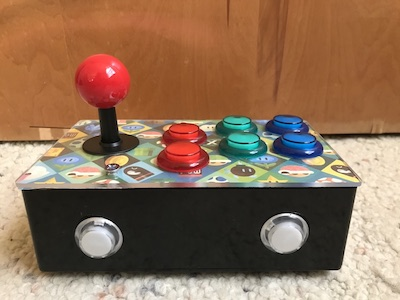

- 2017
- Raspberry Pi
This is my version of the 'Pi Retrobox' which is essentially an all-in-one retro gaming console and controller.
HUGE shoutout to Zach on howchoo for putting together the guide that helped me build this! This was 100% their idea, and I don't take credit for any of it. I'm just happy that I was able to build my own! The build is pretty much the same as howchoo does it, save for the printed image. If you want to learn anything else about it, click on that guide!